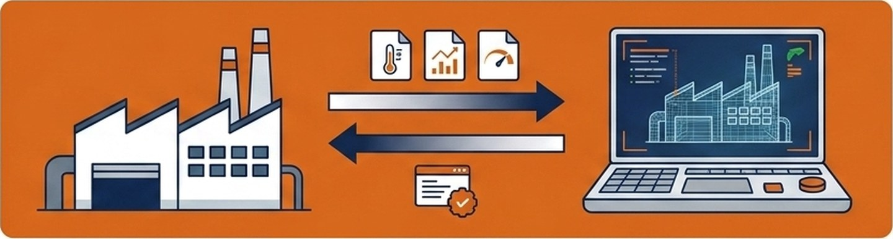
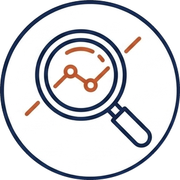
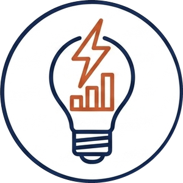
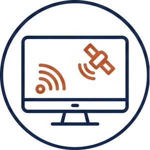
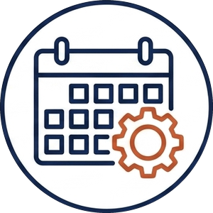
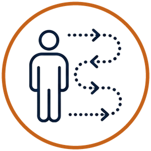
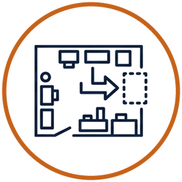
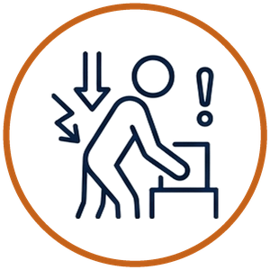
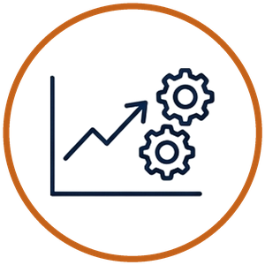
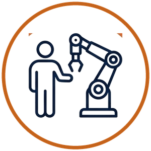

現場のリアルを、そのまま映すデジタル版。

デジタルツインとは、現実の工場や設備を、デジタル空間に“双子（ツイン）”のように再現する技術です。 ふつうの3Dモデルや、決まった条件で動かすシミュレーションとは違い、 現場につけた小さな計測器（IoTセンサー）からのリアルタイムのデータで常に最新の状態に更新され、 現実とデジタルが双方向でデータをやり取りするのが特徴です。
いわば、「現場のリアルを、そのまま映すデジタル版」。
「生きた」データが行き来するからこそ、机上の空論ではなく、現実に効く改善につながります。
「設備を見ること」と「人とモノの動きを試すこと」。この2つで、現場の課題を解いていきます。
現場に取り付けたIoTセンサーから、常にリアルタイムのデータを受け取り、AIが解析します。設備の状態が数字で見えるようになり、故障の予見や品質の維持など、現場のボトルネックを解決できるようになります。
設備の状態を常に数字で把握し、止まる前に手を打てます。

記録されたデータから、不具合の原因を数分で特定できます。
完成する前に品質を予測し、不良を未然に防げます。

設備ごとの電力消費を可視化し、ムダな稼働やピークを抑えられます。

複数拠点の状況を、移動せずにリアルタイムでまとめて確認できます。

納期・稼働率・在庫などを踏まえた生産計画を、自動で組み立てられます。
設備やレイアウトを3Dスキャンで写し取り、人とモノの動きを数値化。現場を止めずにデジタル上で試し、いちばん良いやり方を見つけてから現実に戻します。

誰が・どこを・どれだけ動いているかを、感覚ではなく数字で捉えます。

設備を動かす前に、干渉や動線への影響をデジタル上で確認できます。

作業者の動きから、負担の大きい工程やムダな移動を洗い出せます。
危険な作業やレイアウトを、実際に試す前にシミュレーションで確認できます。

導入前に効果を数字で確かめ、ムダな投資を避けられます。

試した結果を現場に返し、人の負担を減らす具体策にします。
この2つが噛み合うと、工場全体がつながって最適化されていく段階へ進んでいきます。
「うちでも使えるのか」を確かめる入口を、3つご用意しています。